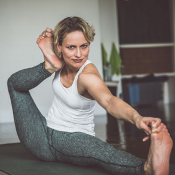
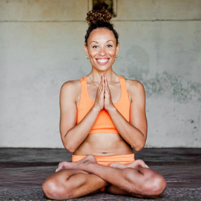
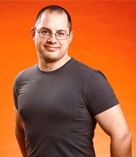
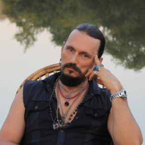
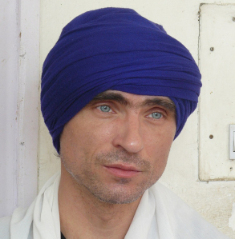

Практикуете йогу, но не получается выкроить время? Наши видеоуроки помогут это исправить — не нужно тратить время на дорогу, появляются лишние 20 минут на занятия в удобном для вас месте. Заниматься ежедневно легко — просто включите любимую тренировку на смартфоне.
Испытываете дискомфорт при выполнении определенных асан? Напишите об этом куратору в личном кабинете, он поможет разобраться, в чем дело. Обратная связь по любым йога-вопросам.
Персональная подборка
Решили прокачать определенную группу мышц или хотите отработать какую-то асану? Не вопрос. Куратор бесплатно по вашему запросу составит персональную подборку видеоуроков, которых нет в открытом доступе.
Для тех, кто решил практиковать самостоятельно, не обязательно искать нужные уроки самому — куратор бесплатно по вашему запросу составит персональную подборку видеоуроков, которых нет в открытом доступе и поможет разобраться во всех нюансах практики. Просто напишите ему в личном кабинете.
Для тех, кому нужен наставник, мы разработали базовый курс с пошаговой поддержкой. Вы будете выполнять домашние задания с разбором вашей техники и рекомендациями по улучшению.
Возможность увидеть, как преподают признанные мастера и взять на вооружение практики и техники для своих уроков.
Выделяйтесь среди конкурентов
Видео мастер-классы у вас дома и в любое время благодаря персональным видеоурокам от авторов.
Звездные преподаватели, которые знают о йоге все
Хармони Слэйтер
Учитель аштанга-йоги с мировым именем, преподает уже более 15 лет. Во всем мире сертификации (высшей преподавательской категории в традиции аштанга-йоги) удостоилось 20 женщин, и Хармони — одна из них.

Ларуга Глейзер
Ларуга Глейзер дает практики и проводит семинары по всему миру. Следует традициям аштанга-йоги 20 лет и имеет большой опыт в различных направлениях. Ведущий гуру проекта YogaYama в Швеции.

Сергей Агапкин
Сертифицированный инструктор International Yoga Federation. Кандидат психологических наук, ректор Института традиционных систем оздоровления, председатель Московского йогатерапевтического общества, член International Association of Yoga Therapists. Преподает 27 лет.

Михаил Константинов
Один из первых преподавателей йоги в России. Основатель и ведущий преподаватель московского Аштанга Йога Центра. Организовал первый в России 50-часовой курс по введению в практику аштанга-виньяса-йоги традиции Шри К.Паттабхи Джойса, построенный по международным стандартам.

Юлия Синявская
Сертифицированный инструктор хатха-йоги, универсальной йоги, йоги для детей с особенностями. Дипломированный специалист по лечебной физкультуре, Шрот-терапии сколиоза. Дипломированный звукотерапевт и ароматерапевт.
Мария Шалимова
Провела более 50 семинаров в разных городах России и за рубежом. Прошла тренинг для учителей в Аштанга Йога Центре в Москве, получила диплом основного уровня. Авторизованный преподаватель аштанга-йоги (level 2).
Александр Куликов
Сертифицированный преподаватель кундалини-йоги школы Йоги Бхаджана. Профессионально тренирует учителей. Преподает с 1999 года.

Леонид Гарценштейн
Йогатерапевт с мировым именем. Разработал методику работы с позвоночником, которая не имеет аналогов в мире. Методика позволяет решить без операций такие сложные проблемы, как грыжа Шморле.
“Недавно нашла портал daYoga. Классная идея. Покупаешь подписку (она дешевле абонемента на групповые занятия), и можно заниматься дома сколько и когда угодно. Это классно, особенно, если учесть, что уроки ведут лучшие практики страны, а семинары проводят лучшие мастера мира!”
Екатерина Соколова
“Я занимаюсь йогой для души, не так часто, но могу это делать в любое время, даже на работе! На daYoga нашла специальные упражнения, которые можно делать в офисе. Спина не затекает, работоспособность выше. А еще у них много полезных статей.”
Оксана Горкина
“Сама не так давно начала преподавать хатха-йогу, хотя занимаюсь давно. Для меня онлайн-школа daYoga — своего рода учебный портал. Здесь размещено много полезной информации, смотрела пару уроков по моему направлению. Есть чему поучиться.”
Ксения Буренкова
“Преподаю йогу, я начинающий инструктор. Пока я единственная в городе, кто ведет йогу. На портале daYoga нашла много интересной информации, даже сама занимаюсь по их урокам. Очень нравятся видео с Куликовым. Начала с бесплатного урока, теперь купила подписку. Недорого, но мне для развития очень полезно!”
Достигайте цели легко
Ежедневная йога — это ваше здоровье, успех и спокойствие.
Занимайтесь с удовольствием, а наши уроки и кураторы вам помогут.
500 уроковСамая полная в рунете коллекция занятий и практик любого уровня сложности. Авторские и эксклюзивные уроки.
Все стили йогиКлассическая, хатха, кундалини и виды, о которых вам только предстоит услышать.
70 преподавателейСертифицированные преподаватели России и Мира.
Обратная связьЛичные рекомендации и консультации от опытных кураторов — разбор ошибок, ответы на вопросы, поддержка.